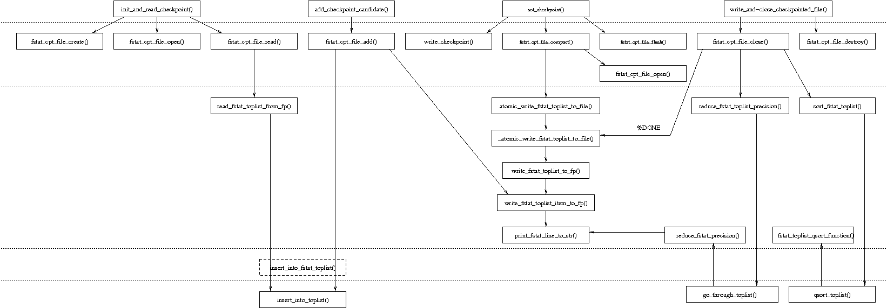

The HierarchicalSearch scans the whole sky point by point. After finishing the analysis for a particular skypoint, the candidates that have been found are put into a "toplist" that keeps track of the n top rated canditates of the analysis of all skypoints so far.
Without checkpointing this list is written to a file after all skypoints had been looked at. Up to that moment, this toplist is kept in RAM only.
Checkpointing should allow this process to be interrupted and picked up anywhere in the middle of the analysis run. It therefore should provide a way to externally (i.e. in a file on disk) store information about the state of the analysis (e.g. loop counters). In particular it needs to provide an external representation of the toplist of candidates (in a file), that is consistant with the toplist in memory at any time. This file should not grow arbitrary large, there should be possibility to limit its size during the analysis run. Checkpointing code should also provide support for picking up from a previously written checkpoint, i.e. restore the toplist and loop counters from the checkpoint. As the application is meant to run on potentially unattended or faulty machines, broken checkpoint information should be detected and dealt with.
The modifications necessary for the checkpointing to the main program should be kept to a minimum to not affect readability and maintainability.
Checkpointing is implemented by means of four functions:
This funcion initializes the data structures for checkpointing, and looks for a previous checkpoint file. If it finds one, it tries to read the previous output back into memory and returns information to resume from the checkpoint. Its Interface is such that it can simply replace a fstat_toplist_init() call in a non-checkpointing version of the program.
Whenever a candiadate has been found, this function not only adds it to the "toplist" in memory; it also appends it to the checkpointed file on disk in case it was actually inserted into the toplist, i.e. if it was "larger" than the "smallest" element in the toplist. Note that actually the candidate is appended to a file buffer in memory, which will be flushed (i.e. written to disk) when writing a checkpoint. Its Interface is such that it can simply replace a fstat_toplist_add() call in a non-checkpointing version of the program.
Actually writes a checkpoint (file). When it's "time to checkpoint", the checkpointed file is flushed, i.e. the candidates in the file buffer (put there by add_checkpoint_candidate()) are actually wrtten to disk. If the file has reached te maximum size, it is "compacted", i.e. completely rewritten from the toplist in memory. Then a new checkpoint file is written, containing the skypoint counter and the length and checksum of the checkpointed file. For consistency checks and a poissibly external progress counter, also the total number of skypoints and the current sky position (rac,dec) is recorded.
write_and_close_checkpointed_file()
After all operations on the toplist and the checkpointed file have been performed, this fuction should be called to finally write the toplist to a file. It actually does this "compacted", i.e. writes it completely from scratch, containing only the candidates that are in the toplist at this moment. It adds an end marker ("%DONE") to the checkpointed file and cleans up all structures used for the toplist and checkpointing. Note that the checkpoint file itself is not removed by this function, this is purposefully left to the BOINC Clinet. Its Interface is such that it can simply replace a fstat_toplist_add() call in a non-checkpointing version of the program.
The implementation of toplist and checkpointing features five levels:
1. Heap Toplist (Heaptoplist.h/c): generic functions for manipulating toplists independent of a certain type (void* and function*)
2. FStatToplist: An incarnation of HeapToplist that adds a tupe for an FStat candidate and a comparison function to order objects of this type.
3. FStat File I/O: Functions for Reading and writing FStatToplist(s), defines a file format for an FStatToplist.
4. Checkpointed File I/O: Functions for managing a checkponted FstatToplist file.
5. Interface (hs_boinc_extras.c): implementation of the interface listed above, in particular functions to write and read the actual "checkpoint file".
The HeapToplist is implemented in the module HeapToplist.h/c (lalapps/src/pulsar/FDS_isolated). the interface functions are located in hs_boinc_extras.h/c (lalapps/src/pulsar/hough/src2), the other levels make up the module FstatToplist.h/c (lalapps/src/pulsar/FDS_isolated).

qsort_toplist
| go_through_toplist
| fstat_toplist_qsort_function
reduce_fstat_precision
| sort_fstat_toplist
| fstat_cpt_file_destro
write_and-close_checkpointed_file
| fstat_cpt_file_open
fstat_cpt_file_flush
| print_fstat_line_to_st
| write_fstat_toplist_item_to_fp
write_fstat_toplist_to_fp
| _atomic_write_fstat_toplist_to_file
atomic_write_fstat_toplist_to_file
| fstat_cpt_file_compact
set_checkpoint
| write_checkpoint
| fstat_cpt_file_add
insert_into_toplist
| insert_into_fstat_toplist
| read_fstat_toplist_from_fp
fstat_cpt_file_read
| fstat_cpt_file_open
| init_and_read_checkpoint
fstat_cpt_file_create.html
| fstat_cpt_file_close
reduce_fstat_toplist_precision